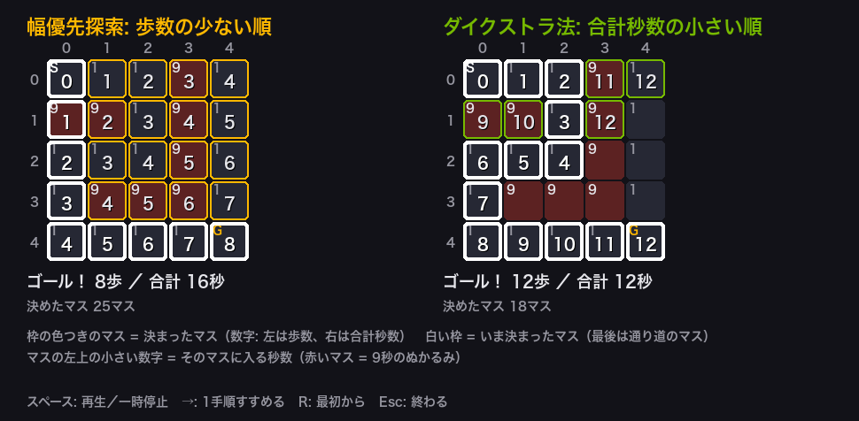
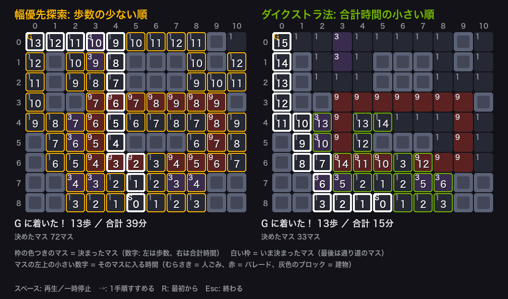
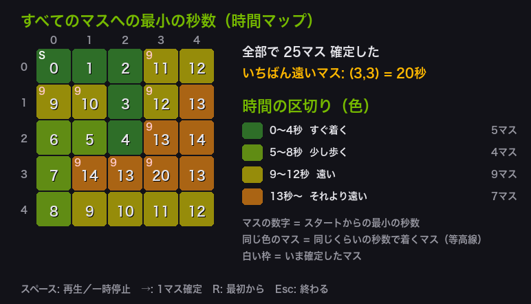
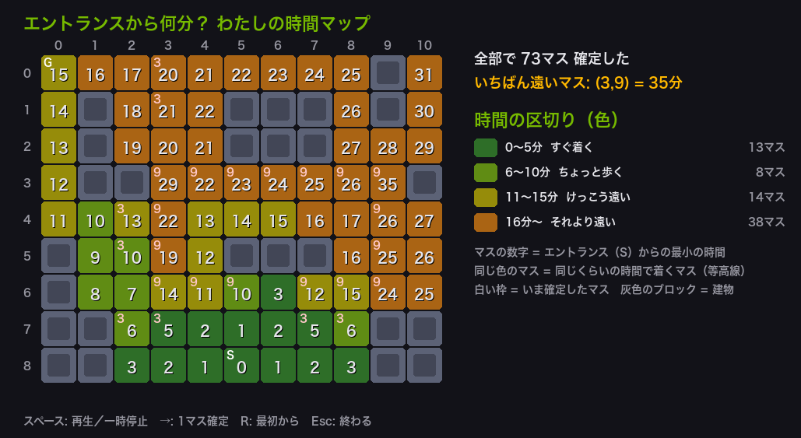

例題とクリエイティブ演習
今回も、例題（参考）を動かして迷路でのダイクストラ法の進み方をつかんだら、 クリエイティブ演習で、第5・6回に続いてディズニーランドを題材に自分の作品を作ります。 演習1で「パレードをよける園内マップ」を作って幅優先探索と比べ、演習2でその地図の「時間マップ」を作ります。
演習のひな形の園内マップは、第5回の地図と同じく、下にエントランス、まん中にシンデレラ城、左上にウエスタンランドがある形をマス目にしたものです （東京ディズニーリゾート公式ブログ 「開園当時のマップをご紹介」の、今のマップを参考にした）。 マスの時間やパレードのルートは例なので、自由に変えてかまいません。まず作業フォルダを用意します。
VS Code でフォルダとファイルを用意する
Step 1: 作業フォルダを作る
- デスクトップに AL2 という名前のフォルダを作る（後期の授業ではずっと同じフォルダを使う）
- AL2 フォルダの中に No07 という名前のフォルダを作る
└── AL2/
├── No06/ ← 前回のファイル
└── No07/ ← 第7回はここに保存
Step 2: VS Code でフォルダを開く
- Visual Studio Code を起動する
- メニューから 「ファイル」→「フォルダーを開く」を選ぶ
- Step 1 で作った AL2/No07 フォルダを選んで開く
左側のエクスプローラーに No07 フォルダの中身が表示される（最初は空）。
Step 3: 例題ごとにファイルを作って実行する
- 左側エクスプローラーの No07 の横にある 新しいファイルアイコンをクリック
- ファイル名を入力して Enter（例題1なら
AL2-07-ex1.py） - 例題のコードブロック右上の コピーボタンをクリック
- VS Code の編集画面に 貼り付ける（Ctrl+V / Cmd+V）
- 保存する（Ctrl+S / Cmd+S）
- 右上の ▷（再生ボタン）をクリックして実行する
今回作るファイル（演習）: AL2-07-ex1.py, AL2-07-ex2.py。参考のコードを保存するときは、名前の最後に -ref を付ける
- 参考: 完成したコード（床コスト付きの迷路を幅優先探索とダイクストラ法で解いて比べるものと、すべてのマスへの最小の秒数を求めて速さを測るもの）。コメントを読みながら動かし、窓でマスが決まっていく順番を見る
- クリエイティブ演習: ディズニーランドの園内をマス目にした地図のひな形と、その地図の時間マップのひな形。穴埋めはありません。 そのまま動くので、まず実行してから、★ の付いた部分（地図・記号の時間・題名・行き先・案内文・時間の区切り・広さ）を自由に書き換えて、自分の作品にする
ファイル名は、参考が AL2-07-ex1-ref.py（ref = reference、参考）、
演習が AL2-07-ex1.py のように分けます（同じ名前にすると上書きされてしまうため）。
標準課題で使うのは演習1と演習2の自分の園内マップです。
書き換えたあとに動かなくなったら、ターミナルや窓に出る説明を読んで直します（各演習の「うまくいかないとき」の表も見る）。
迷路と探索の進み方を絵で表示する道具（pygame）
今回の例題と演習も、第2〜6回と同じく pygame（パイゲーム: Python で絵やゲームの画面を作る道具）の窓で表示します。 例題1・演習1は幅優先探索とダイクストラ法の2つの迷路を左右に並べて、例題2・演習2は時間マップを、1手順ずつ見せます。
1. pygame が入っているか確かめる
第2〜6回で入れた人は、そのまま使えます。VS Code の「ターミナル」→「新しいターミナル」で次の1行を打ちこみ、Enter を押します。
2.6.1 のような数字が出れば入っています。
ターミナル（Windows）
py -c "import pygame; print(pygame.version.ver)"
ModuleNotFoundError と出たら、まだ入っていません。次の1行で入れます
（うまくいかないときは第2回の「うまくいかないとき」の表を見る）。
ターミナル（Windows）
pip install pygame
Mac の人は pip のかわりに pip3、py のかわりに python3 と打つ。
2. 窓の操作（第2〜6回と同じ）
| キー | 動き |
|---|---|
| スペース | 自動で再生／一時停止 |
| →（右矢印） | 1手順だけ進める（1マス確定するごと。標準課題の図を描くときに便利） |
| R | 最初からやり直す |
| Esc または窓の × | 終わる（窓を閉じるとプログラムも終わる） |
窓に絵を描くコードは、各ファイルのいちばん下 （「ここから下は、…pygame の窓に絵で表示するための道具です」と書いた行より下）に入っています。そこは読まなくてかまいません。 ファイルは1つだけで動きます。ターミナルに結果が出たあとで窓が開きます。窓が見当たらないときは、タスクバー（Mac は Dock）を見てください。
今回のキーワード
| 用語 | 説明 |
|---|---|
| 床コスト | マスごとに決まっている「そのマスに入るのにかかる時間や手間」。そのマスへ入る辺の重みとして扱う。 |
| 幅優先探索 | 第2回の探索。スタートから歩数の少ないマスから順に調べる。マスの時間は見ないので、歩数がいちばん少ない道が求まる。 |
| ダイクストラ法 | 第5・6回の探索。合計時間のいちばん小さいマスから順に確定する。合計時間がいちばん短い道が求まる（時間が 0 以上のとき）。 |
| 時間マップ | スタートから全部のマスへの最短時間を、同じくらいの時間ごとに色分けした地図。地図の等高線（同じ高さの所を結んだ線）に似ている。 |
| time.perf_counter() | いまの時刻を秒で返す命令。処理の前と後で読んで引き算すると、かかった時間が分かる。 |
床コスト付きの迷路を2つの方法で解き、パレードをよける園内マップを作る
例題1（参考）は、1章の図と同じ5×5の迷路（数字はそのマスに入る秒数、9 はぬかるみ）を、 幅優先探索とダイクストラ法の2つで解いて比べるプログラムです。 窓では2つの迷路を左右に並べて、マスが決まっていく順番を1手順ずつ見せます。 演習1では、同じしくみでディズニーランドの園内マップを作り、パレードをよける道をさがします。
| コードの部分 | やっていること |
|---|---|
neighbors(r, c) | 上・下・左・右のうち、迷路の中にあるマスを返す（第2回と同じ） |
current = memo.popleft() | 幅優先探索: メモ（キュー）のいちばん古いマスを取り出す。マスの秒数は見ない |
total, current = heapq.heappop(queue) | ダイクストラ法: 合計秒数がいちばん小さい組を取り出す（第6回と同じ） |
new_total = total + cost_map[nxt[0]][nxt[1]] | となりのマス nxt の秒数を足す。これが「辺の重みを足す」こと |
if current == goal: break | ゴールが確定したら止める（それより早い道はもうない） |
build_route(came_from) | ゴールから1つ前のマスを逆にたどって、道順を組み立てる（第5回と同じ） |
窓の読み方は次のとおりです。
| 窓に表示されるもの | 読み方 |
|---|---|
| 左: 幅優先探索（橙の枠） | 決まったマスの数字 = スタートからの歩数 |
| 右: ダイクストラ法（緑の枠） | 決まったマスの数字 = スタートからの合計秒数（演習1では合計時間（分）） |
| マスの色と、左上の小さい数字 | そのマスに入る時間。赤 = 9（ぬかるみ、パレード）、むらさき = 少し時間がかかる（人ごみ）、灰色のブロック = 通れない建物 |
| 白い枠 | いま決まったマス。ゴールに着いたあとは、通り道のマスが白い枠になる |
例題1（参考）── 完成したコード。コメントを読みながら動かし、窓のアニメーションと見比べて進み方をつかむ。保存するなら AL2-07-ex1-ref.py の名前で
AL2-07-ex1-ref.py
Python ── AL2-07-ex1-ref.py # 第7回 例題1（参考）: 床コスト付きの迷路を、幅優先探索とダイクストラ法の2つで解いて比べる # 数字は「そのマスに入るのにかかる秒数」。9 のマスはぬかるみで、通るのに時間がかかる。 import heapq from collections import deque cost_map = [ [1, 1, 1, 9, 1], [9, 9, 1, 9, 1], [1, 1, 1, 9, 1], [1, 9, 9, 9, 1], [1, 1, 1, 1, 1], ] rows = len(cost_map) # 行の数（縦のマス数） cols = len(cost_map[0]) # 列の数（横のマス数） start = (0, 0) # 左上 goal = (rows - 1, cols - 1) # 右下 INF = float("inf") def neighbors(r, c): """上・下・左・右のうち、迷路の中にあるマスを返す（第2回と同じ）""" result = [] for dr, dc in [(-1, 0), (1, 0), (0, -1), (0, 1)]: nr = r + dr nc = c + dc if 0 <= nr < rows and 0 <= nc < cols: result.append((nr, nc)) return result def build_route(came_from): """ゴールから came_from を逆にたどって道順を組み立てる（第5回と同じ）""" route = [] node = goal while node is not None: route.append(node) node = came_from[node] route.reverse() return route def route_seconds(route): """道順 route の合計秒数（スタートのマスは数えない。入ったマスの秒数を足す）""" total = 0 for r, c in route[1:]: total = total + cost_map[r][c] return total # ---- 幅優先探索（第2回）: 歩数の少ないマスから順に調べる。マスの秒数は見ない ---- steps = {start: 0} # スタートから何歩か came_bfs = {start: None} bfs_order = [] # 調べた順の (マス, 歩数)。窓の表示に使う memo = deque([start]) # あとで調べるマスのメモ（第2回のキュー） while len(memo) > 0: current = memo.popleft() bfs_order.append((current, steps[current])) if current == goal: break for nxt in neighbors(current[0], current[1]): if nxt in came_bfs: continue came_bfs[nxt] = current steps[nxt] = steps[current] + 1 memo.append(nxt) bfs_route = build_route(came_bfs) # ---- ダイクストラ法（第6回の heapq 版）: 合計秒数の小さいマスから順に確定する ---- distance = {} came_dij = {} for r in range(rows): for c in range(cols): distance[(r, c)] = INF came_dij[(r, c)] = None distance[start] = 0 settled = set() dij_order = [] # 確定した順の (マス, 合計秒数)。窓の表示に使う queue = [(0, start)] while len(queue) > 0: total, current = heapq.heappop(queue) if current in settled: continue # 古い組は読み飛ばす（第6回） settled.add(current) dij_order.append((current, total)) if current == goal: break # ゴールが確定したら、もっと早い道はないので止めてよい for nxt in neighbors(current[0], current[1]): new_total = total + cost_map[nxt[0]][nxt[1]] # ← となりのマスに入る秒数を足す（グラフの「辺の重み」にあたる） if new_total < distance[nxt]: distance[nxt] = new_total came_dij[nxt] = current heapq.heappush(queue, (new_total, nxt)) dij_route = build_route(came_dij) def show(route, title): """通り道のマスに * を付けて迷路を表示する""" print(title) for r in range(rows): line = "" for c in range(cols): mark = "*" if (r, c) in route else " " line = line + f"{cost_map[r][c]:>4}{mark}" print(" " + line) print() print("床コスト付きの迷路（数字はそのマスに入るのにかかる秒数）") show([], "-" * 30) show(bfs_route, f"幅優先探索の通り道（*）: {len(bfs_route) - 1}歩 ／ 合計 {route_seconds(bfs_route)}秒") show(dij_route, f"ダイクストラ法の通り道（*）: {len(dij_route) - 1}歩 ／ 合計 {route_seconds(dij_route)}秒") print("-" * 46) print("方法 歩数 合計秒数 決めたマス") print(f"幅優先探索 {len(bfs_route) - 1:>5}歩 {route_seconds(bfs_route):>7}秒 {len(bfs_order):>8}マス") print(f"ダイクストラ法 {len(dij_route) - 1:>5}歩 {route_seconds(dij_route):>7}秒 {len(dij_order):>8}マス") print("-" * 46) print("幅優先探索は歩数を、ダイクストラ法は合計秒数を、いちばん小さくしている") # ============================================================ # ここから下は、迷路と探索の進み方を pygame の窓に絵で表示するための道具です。 # 中身は読まなくてかまいません（アルゴリズムは上の部分にあります）。 # 操作: スペース = 再生／一時停止 → = 1手順すすめる R = 最初から Esc = 終わる # ============================================================ import os os.environ.setdefault("PYGAME_HIDE_SUPPORT_PROMPT", "1") # pygame のあいさつ文を出さない import pygame STEP_MS = 260 # 1手順あたりの時間（ミリ秒） BG = (18, 18, 24) FLOOR = (38, 40, 52) WALL = (92, 98, 118) WALL_DARK = (66, 70, 86) LINE = (80, 84, 100) TEXT = (230, 230, 235) SUB = (150, 150, 160) GREEN = (118, 185, 0) AMBER = (255, 184, 0) RED = (255, 110, 110) WHITE = (255, 255, 255) # 日本語が出せるフォントの場所（Mac → Windows の順にさがす） FONT_FILES = [ "/System/Library/Fonts/ヒラギノ角ゴシック W6.ttc", "/System/Library/Fonts/ヒラギノ角ゴシック W3.ttc", "/System/Library/Fonts/Hiragino Sans GB.ttc", "C:/Windows/Fonts/meiryo.ttc", "C:/Windows/Fonts/YuGothM.ttc", "C:/Windows/Fonts/msgothic.ttc", ] FONT_NAMES = "hiraginosans,yugothic,meiryo,msgothic,notosanscjkjp,notosansjp" def _font(size, bold=False): for path in FONT_FILES: if os.path.exists(path): return pygame.font.Font(path, size) return pygame.font.SysFont(FONT_NAMES, size, bold=bold) def _terrain_color(cost): """マスの時間（コスト）で床の色を決める。1 = ふつうの床、大きいほど赤っぽく暗い色。""" if cost <= 1: return FLOOR if cost <= 4: return (58, 44, 78) # むらさき = 少し時間がかかる（人ごみなど） if cost <= 8: return (78, 52, 30) # 茶色 = 時間がかかる return (92, 34, 34) # 赤 = とても時間がかかる（パレードなど） def _fit(font, text, width): """text が width ピクセルに収まらなければ、後ろを「…」にして縮める。""" if font.size(text)[0] <= width: return text while text and font.size(text + "…")[0] > width: text = text[:-1] return text + "…" def _draw_cells(screen, fonts, grid, labels, gx, gy, cell): """マス目を描く。grid[r][c] はそのマスに入る時間（None は通れない建物）。labels = {(r, c): "S"} など。""" _, _, small = fonts for r in range(len(grid)): for c in range(len(grid[0])): rect = pygame.Rect(gx + c * cell + 1, gy + r * cell + 1, cell - 2, cell - 2) if grid[r][c] is None: pygame.draw.rect(screen, WALL, rect, border_radius=5) pygame.draw.rect(screen, WALL_DARK, rect.inflate(-cell // 3, -cell // 3), border_radius=3) continue pygame.draw.rect(screen, _terrain_color(grid[r][c]), rect, border_radius=5) if (r, c) in labels: t = small.render(labels[(r, c)], True, WHITE if labels[(r, c)] == "S" else AMBER) else: t = small.render(str(grid[r][c]), True, SUB if grid[r][c] <= 1 else TEXT) if cell >= 30: screen.blit(t, (rect.x + 3, rect.y + 1)) def _number(screen, font, text, rect, color): """マスのまん中に、影つきで数字を書く。""" t = font.render(text, True, color) shadow = font.render(text, True, (0, 0, 0)) tx, ty = rect.centerx - t.get_width() // 2, rect.centery - t.get_height() // 2 + 3 screen.blit(shadow, (tx + 1, ty + 1)) screen.blit(t, (tx, ty)) def _loop(screen, fonts, last_step, draw, hint): """窓のくり返し処理。draw(k) が k 手順目の画面を描く。""" capture = os.environ.get("AL2_CAPTURE") # 授業ページの画像を作るときだけ使う k = int(os.environ.get("AL2_STEP", last_step)) if capture else 0 playing = False clock = pygame.time.Clock() last = pygame.time.get_ticks() while True: for event in pygame.event.get(): if event.type == pygame.QUIT: pygame.quit() return if event.type == pygame.KEYDOWN: if event.key == pygame.K_ESCAPE: pygame.quit() return if event.key == pygame.K_SPACE: playing = not playing if event.key == pygame.K_RIGHT and k < last_step: k += 1 playing = False if event.key == pygame.K_r: k, playing = 0, False if playing and pygame.time.get_ticks() - last >= STEP_MS: last = pygame.time.get_ticks() if k < last_step: k += 1 else: playing = False screen.fill(BG) draw(k) h = fonts[2].render(hint, True, SUB) screen.blit(h, (30, screen.get_height() - 30)) pygame.display.flip() if capture: pygame.image.save(screen, capture) pygame.quit() return clock.tick(30) def show_window(grid, labels, runs, title, legend): """2つの探索を横に並べて、マスが決まっていく順番を1手順ずつ表示する。窓を閉じると終わる。 runs = [(見出し, 色, [(マス, 数), ...] 決まった順, 通り道, 最後に出す文), ...]""" pygame.init() rows, cols = len(grid), len(grid[0]) cell = max(18, min(46, 470 // cols, 470 // rows)) panel_w = max(cols * cell + 22, 440) width = 30 + len(runs) * (panel_w + 30) height = 70 + 26 + rows * cell + 150 screen = pygame.display.set_mode((width, height)) pygame.display.set_caption(title) fonts = (_font(22, True), _font(18), _font(14)) big, mid, small = fonts last_step = max(len(run[2]) for run in runs) def panel(run, k, x0, y0): head, color, order, route, summary = run done = k >= len(order) shown = order[:k] value = dict(shown) screen.blit(big.render(head, True, color), (x0, y0)) gx, gy = x0 + 22, y0 + 48 for c in range(cols): t = small.render(str(c), True, SUB) screen.blit(t, (gx + c * cell + cell // 2 - t.get_width() // 2, gy - 20)) for r in range(rows): t = small.render(str(r), True, SUB) screen.blit(t, (x0 + 4, gy + r * cell + cell // 2 - t.get_height() // 2)) _draw_cells(screen, fonts, grid, labels, gx, gy, cell) for (r, c), v in shown: rect = pygame.Rect(gx + c * cell + 1, gy + r * cell + 1, cell - 2, cell - 2) on_route = done and (r, c) in route pygame.draw.rect(screen, WHITE if on_route else color, rect, width=4 if on_route else 2, border_radius=5) _number(screen, mid if cell >= 34 else small, str(v), rect, WHITE if on_route else TEXT) if shown and not done: (r, c), v = shown[-1] rect = pygame.Rect(gx + c * cell + 1, gy + r * cell + 1, cell - 2, cell - 2) pygame.draw.rect(screen, WHITE, rect, width=4, border_radius=5) by = gy + rows * cell + 12 if k == 0: info, note = "スペースで開始／→で1手順", "" elif done: info, note = summary, f"決めたマス {len(order)}マス" else: (r, c), v = shown[-1] info, note = f"手順{k} マス ({r},{c}) が {v} に決まった", f"決めたマス {k}マス" screen.blit(mid.render(_fit(mid, info, panel_w - 10), True, TEXT), (x0, by)) screen.blit(small.render(note, True, SUB), (x0, by + 30)) def draw(k): for i, run in enumerate(runs): panel(run, k, 30 + i * (panel_w + 30), 18) for i, text in enumerate(legend): screen.blit(small.render(text, True, SUB), (30, height - 104 + i * 24)) _loop(screen, fonts, last_step, draw, "スペース: 再生／一時停止 →: 1手順すすめる R: 最初から Esc: 終わる") # --- 窓を開いて、2つの探索でマスが決まっていく順番を並べてアニメーション表示する --- # 左 = 幅優先探索（マスの数字は歩数）、右 = ダイクストラ法（マスの数字は合計秒数）、最後に白い枠 = 通り道 show_window(cost_map, {start: "S", goal: "G"}, [ ("幅優先探索: 歩数の少ない順", AMBER, bfs_order, bfs_route, f"ゴール！ {len(bfs_route) - 1}歩 ／ 合計 {route_seconds(bfs_route)}秒"), ("ダイクストラ法: 合計秒数の小さい順", GREEN, dij_order, dij_route, f"ゴール！ {len(dij_route) - 1}歩 ／ 合計 {route_seconds(dij_route)}秒"), ], "床コスト付きの迷路", [ "枠の色つきのマス = 決まったマス（数字: 左は歩数、右は合計秒数） 白い枠 = いま決まったマス（最後は通り道のマス）", "マスの左上の小さい数字 = そのマスに入る秒数（赤いマス = 9秒のぬかるみ）", ])
▶ 実行結果（ターミナル）
![AL2-07-ex1-ref.py の実行結果。床コスト付きの迷路（数字はそのマスに入るのにかかる秒数） / ------------------------------ / 1 1 1 9 1 / 9 9 1 9 1 / 1 1 1 9 1 / 1 9 9 9 1 / 1 1 1 1 1 / / 幅優先探索の通り道（*）: 8歩 ／ 合計 16秒 / 1* 1 1 9 1 / 9* 9 1 9 1 / 1* 1 1 9 1 / 1* 9 9 9 1 / 1* 1* 1* 1* 1* / / ダイクストラ法の通り道（*）: 12歩 ／ 合計 12秒 / 1* 1* 1* 9 1 / 9 9 1* 9 1 / 1* 1* 1* 9 1 / 1* 9 9 9 1 / 1* 1* 1* 1* 1* / / ---------------------------------------------- / 方法 歩数 合計秒数 決めたマス / 幅優先探索 8歩 16秒 25マス / ダイクストラ法 12歩 12秒 18マス / ---------------------------------------------- / 幅優先探索は歩数を、ダイクストラ法は合計秒数を、いちばん小さくしている](images/a07_ex1-ref_result.png)
▶ 開いた窓（最後まで進めたところ）

幅優先探索は8歩・16秒、ダイクストラ法は12歩・12秒という結果でした。幅優先探索の道は、左の列を下る途中で 9 のマス（ぬかるみ）を1つ通っています（1 × 7 + 9 = 16秒）。ダイクストラ法の道は、歩数は4歩多いのに 9 のマスを1つも通らず、1 のマスだけを歩いています。窓の右側では、9 のマスが後回しになり、1 のマスが先に広がっていくのが見えます。「決めたマス」は、幅優先探索が25マス（ゴールがいちばん遠い右下なので全部）、ダイクストラ法がゴールで止めたので18マスです。
演習1（クリエイティブ）── AL2-07-ex1.py の名前で保存し、まずそのまま実行する。次に ★ の部分を書き換えて、自分の作品にする
演習1のミッション（★ の部分を書き換える）
| レベル | やること |
|---|---|
| Lv1 自分の地図 | park_map を書き換えて、自分の園内マップにする（行き先 G を好きな場所に動かす、# の建物や ~ の人ごみ・P のパレードを置き直す など）。
TITLE と GOAL_NAME も自分のものにする。S と G は1つずつ、どの行も同じ文字数にする |
| Lv2 遠回りが早い | ダイクストラ法の道のほうが歩数は多いのに、合計時間は短い地図にする（ひな形はどちらも13歩）。
ターミナルに「Lv2 達成」と出ればよい。コツ: ダイクストラ法の道（*）の途中に # を置いてふさぎ、少し遠回りの、パレードのない抜け道を作る |
| Lv3 新しい記号 | COST に新しい記号を1つ足して、地図で使う（例: "w": 2, 水たまり、"F": 4, フードワゴンの行列）。
窓で、その記号のマスの色と左上の数字を確かめる |
| Lv4 案内文 | announce 関数の print を書き換え、自分らしい案内文にする。
使える材料: route（通るマスの並び）、minutes（合計時間）、len(route) - 1（歩数）、GOAL_NAME |
Lv2 の例: 2マスだけ書き換えると、幅優先探索 13歩・39分、ダイクストラ法 15歩・19分
park_map = [
"G..~.....#.",
"##.~.###.#.", # ← (1,0) を # にした（池で左の小道がふさがる）
".#...###...",
".#.PPPPPPP#", # ← (3,2) を . にした（建物のあいだの抜け道）
...（ここから下はひな形と同じ）
AL2-07-ex1.py
Python ── AL2-07-ex1.py # 第7回 クリエイティブ演習1: ディズニーランドの園内をマス目の地図にして、パレードをよける道をさがす # 同じ地図を、幅優先探索（第2回）とダイクストラ法（第6回の heapq 版）の2つで解いて比べる。 # # ★ が付いた部分は、自由に書き換えてよい（それ以外はそのままでよい）。 # Lv1: park_map を自分の地図にする（S と G は1つずつ。行の長さはそろえる）。TITLE と GOAL_NAME も自分のものに # Lv2: ダイクストラ法の道のほうが「歩数は多いのに、合計時間は短い」地図にする（ひな形はどちらも13歩なので、まだ未達成） # Lv3: COST に新しい記号を1つ足して、地図で使う（例: "w": 2 水たまり、"F": 4 フードワゴンの行列） # Lv4: announce 関数の print を書き換え、自分らしい案内文にする import heapq from collections import deque # ★ 窓のいちばん上に出る題名 TITLE = "パレードをよけてビッグサンダーへ" # ★ 行きたい場所の名前（地図の G のマス） GOAL_NAME = "ビッグサンダー・マウンテン" # ★ 園内の地図。1文字が1マス（歩いて1分くらいの広さ）。上が北 # S = エントランス（出発） G = 行きたい場所 # = 建物や池（通れない） # . = ふつうの道 ~ = 人ごみ P = パレードのルート（横切るのに時間がかかる） # ひな形: 下のまん中がエントランス、まん中の # がシンデレラ城、そのまわりを P のパレードが回っている。 # G は左上のウエスタンランド（ビッグサンダー・マウンテン） # どの行も同じ文字数にする（行の長さがちがうとエラーになる） park_map = [ "G..~.....#.", ".#.~.###.#.", ".#...###...", ".##PPPPPPP#", "..~P.....P.", "#.~P.###.P.", "#..PPP.PPP.", "##~~...~~##", "##...S...##", ] # ★ 記号ごとの「そのマスに入るのにかかる時間（分）」。# は通れないのでここには書かない # 新しい記号を足すときは、"w": 2, のように1行足す（時間は 0 以上の整数） COST = { ".": 1, # ふつうの道 "S": 1, # エントランス "G": 1, # 行きたい場所 "~": 3, # 人ごみ "P": 9, # パレードのルート } def announce(route, minutes): """★ ダイクストラ法で見つけた道の案内文を表示する。route = 通るマスの並び、minutes = 合計時間""" print(f"【エントランス から {GOAL_NAME} へ】 パレードをよけて {minutes}分") print(f" {len(route) - 1}マス歩く道です") # ------------------------------------------------------------ # ここから先は探索の本体（書き換えずに読むだけ）。例題1（参考）と同じ2つの探索なので、窓のアニメーションと見比べよう # 参考の cost_map[r][c]（マスの秒数）が、ここでは COST[park_map[r][c]]（記号の時間）に変わっている。 # 参考より増えているのは、書きまちがいの検査と、# のマスへ進まないようにする部分 # ------------------------------------------------------------ # 書きまちがいを先に見つける（見つけたら、直し方を表示して止まる） # raise SystemExit("…") は、「…」を表示してプログラムを終わらせる命令 if len(park_map) == 0: raise SystemExit("park_map が空っぽ。\"G..~..\" のような行を [ ] の中に並べよう") for mark in COST: if type(COST[mark]) != int or COST[mark] < 0: raise SystemExit(f"COST の \"{mark}\" の時間がおかしい。時間は \" \" で囲まず、0 以上の整数（3 など）で書こう") for r in range(len(park_map)): if len(park_map[r]) != len(park_map[0]): raise SystemExit(f"park_map の {r}行目（上から {r + 1}番目）の長さが {len(park_map[r])}文字で、" f"0行目の {len(park_map[0])}文字とちがう。どの行も同じ文字数にしよう") for c in range(len(park_map[r])): mark = park_map[r][c] if mark in " ": raise SystemExit(f"park_map の {r}行目（上から {r + 1}番目）に空白がまじっている。空白を消して . にしよう") if mark != "#" and mark not in COST: raise SystemExit(f"park_map の ({r},{c}) の「{mark}」が COST にない。COST に \"{mark}\": 2, のような行を足すか、地図の文字を直そう") rows = len(park_map) # 行の数（縦のマス数） cols = len(park_map[0]) # 列の数（横のマス数） start = None goal = None for r in range(rows): for c in range(cols): if park_map[r][c] == "S": if start is not None: raise SystemExit(f"S が2つある（{start} と ({r}, {c})）。出発する場所は1つにしよう") start = (r, c) if park_map[r][c] == "G": if goal is not None: raise SystemExit(f"G が2つある（{goal} と ({r}, {c})）。行きたい場所は1つにしよう") goal = (r, c) if start is None or goal is None: raise SystemExit("park_map に S（出発）と G（行きたい場所）を1つずつ書こう") INF = float("inf") def neighbors(r, c): """上・下・左・右のうち、地図の中にあって建物（#）ではないマスを返す（第2回と同じ）""" result = [] for dr, dc in [(-1, 0), (1, 0), (0, -1), (0, 1)]: nr = r + dr nc = c + dc if nr < 0 or nr >= rows or nc < 0 or nc >= cols: continue if park_map[nr][nc] == "#": continue result.append((nr, nc)) return result def cost(cell): """マス cell に入るのにかかる時間（分）。記号を COST で時間に直す""" return COST[park_map[cell[0]][cell[1]]] def build_route(came_from): """ゴールから came_from を逆にたどって道順を組み立てる（第5回と同じ）""" route = [] node = goal while node is not None: route.append(node) node = came_from[node] route.reverse() return route def route_minutes(route): """道順 route の合計時間（スタートのマスは数えない。入ったマスの時間を足す）""" total = 0 for cell in route[1:]: total = total + cost(cell) return total # ---- 幅優先探索（第2回）: 歩数の少ないマスから順に調べる。マスの時間は見ない ---- steps = {start: 0} # スタートから何歩か came_bfs = {start: None} # そのマスへ来るときの1つ前のマス bfs_order = [] # 調べた順の (マス, 歩数)。窓の表示に使う memo = deque([start]) # あとで調べるマスのメモ（第2回のキュー。heapq の queue とは別もの） while len(memo) > 0: current = memo.popleft() bfs_order.append((current, steps[current])) if current == goal: break for nxt in neighbors(current[0], current[1]): if nxt in came_bfs: continue came_bfs[nxt] = current steps[nxt] = steps[current] + 1 memo.append(nxt) if goal not in came_bfs: raise SystemExit("S から G へ行けない（# で道がふさがっている）。# を . にして道を開けよう") bfs_route = build_route(came_bfs) # ---- ダイクストラ法（第6回の heapq 版）: 合計時間の小さいマスから順に確定する ---- distance = {} # 距離表: スタートからそのマスまでの、いま分かっているいちばん短い時間 came_dij = {} for r in range(rows): for c in range(cols): distance[(r, c)] = INF came_dij[(r, c)] = None distance[start] = 0 settled = set() # 確定したマス dij_order = [] # 確定した順の (マス, 合計時間)。窓の表示に使う queue = [(0, start)] # heapq の箱。(そのマスまでの時間, マス) の組を入れる while len(queue) > 0: total, current = heapq.heappop(queue) # ① 時間がいちばん小さい組を取り出す if current in settled: continue # 古い組は読み飛ばす（第6回） settled.add(current) # ② 確定する dij_order.append((current, total)) if current == goal: break # ゴールが確定したら、もっと早い道はないので止めてよい for nxt in neighbors(current[0], current[1]): new_total = total + cost(nxt) # ③ となりのマスに入る時間を足す（これがグラフの「辺の重み」にあたる） if new_total < distance[nxt]: distance[nxt] = new_total came_dij[nxt] = current heapq.heappush(queue, (new_total, nxt)) dij_route = build_route(came_dij) def show(route, title): """通り道のマスを * にして地図を表示する（S と G はそのまま）""" print(title) for r in range(rows): line = "" for c in range(cols): mark = park_map[r][c] if (r, c) in route and mark not in "SG": mark = "*" line = line + mark + " " print(" " + line) print() bfs_steps, bfs_min = len(bfs_route) - 1, route_minutes(bfs_route) dij_steps, dij_min = len(dij_route) - 1, route_minutes(dij_route) show([], f"{TITLE}（S = エントランス、G = {GOAL_NAME}）") show(bfs_route, f"幅優先探索の道（*）: {bfs_steps}歩 ／ 合計 {bfs_min}分") show(dij_route, f"ダイクストラ法の道（*）: {dij_steps}歩 ／ 合計 {dij_min}分") print("-" * 46) print("方法 歩数 合計時間 決めたマス") print(f"幅優先探索 {bfs_steps:>5}歩 {bfs_min:>7}分 {len(bfs_order):>8}マス") print(f"ダイクストラ法 {dij_steps:>5}歩 {dij_min:>7}分 {len(dij_order):>8}マス") print("-" * 46) if dij_steps > bfs_steps and dij_min < bfs_min: print(f"Lv2 達成: ダイクストラ法の道は {dij_steps - bfs_steps}歩 多いのに、{bfs_min - dij_min}分 早い") elif dij_min < bfs_min: print(f"ダイクストラ法の道のほうが {bfs_min - dij_min}分 早い（歩数の差は {dij_steps - bfs_steps}歩）") else: print("2つの道の合計時間が同じ。P や ~ のマスを、幅優先探索の道の上に置いてみよう") print() announce(dij_route, dij_min) # ============================================================ # ここから下は、地図と探索の進み方を pygame の窓に絵で表示するための道具です。 # 中身は読まなくてかまいません（アルゴリズムは上の部分にあります）。 # 操作: スペース = 再生／一時停止 → = 1手順すすめる R = 最初から Esc = 終わる # ============================================================ import os os.environ.setdefault("PYGAME_HIDE_SUPPORT_PROMPT", "1") # pygame のあいさつ文を出さない import pygame STEP_MS = 260 # 1手順あたりの時間（ミリ秒） BG = (18, 18, 24) FLOOR = (38, 40, 52) WALL = (92, 98, 118) WALL_DARK = (66, 70, 86) LINE = (80, 84, 100) TEXT = (230, 230, 235) SUB = (150, 150, 160) GREEN = (118, 185, 0) AMBER = (255, 184, 0) RED = (255, 110, 110) WHITE = (255, 255, 255) # 日本語が出せるフォントの場所（Mac → Windows の順にさがす） FONT_FILES = [ "/System/Library/Fonts/ヒラギノ角ゴシック W6.ttc", "/System/Library/Fonts/ヒラギノ角ゴシック W3.ttc", "/System/Library/Fonts/Hiragino Sans GB.ttc", "C:/Windows/Fonts/meiryo.ttc", "C:/Windows/Fonts/YuGothM.ttc", "C:/Windows/Fonts/msgothic.ttc", ] FONT_NAMES = "hiraginosans,yugothic,meiryo,msgothic,notosanscjkjp,notosansjp" def _font(size, bold=False): for path in FONT_FILES: if os.path.exists(path): return pygame.font.Font(path, size) return pygame.font.SysFont(FONT_NAMES, size, bold=bold) def _terrain_color(cost): """マスの時間（コスト）で床の色を決める。1 = ふつうの床、大きいほど赤っぽく暗い色。""" if cost <= 1: return FLOOR if cost <= 4: return (58, 44, 78) # むらさき = 少し時間がかかる（人ごみなど） if cost <= 8: return (78, 52, 30) # 茶色 = 時間がかかる return (92, 34, 34) # 赤 = とても時間がかかる（パレードなど） def _fit(font, text, width): """text が width ピクセルに収まらなければ、後ろを「…」にして縮める。""" if font.size(text)[0] <= width: return text while text and font.size(text + "…")[0] > width: text = text[:-1] return text + "…" def _draw_cells(screen, fonts, grid, labels, gx, gy, cell): """マス目を描く。grid[r][c] はそのマスに入る時間（None は通れない建物）。labels = {(r, c): "S"} など。""" _, _, small = fonts for r in range(len(grid)): for c in range(len(grid[0])): rect = pygame.Rect(gx + c * cell + 1, gy + r * cell + 1, cell - 2, cell - 2) if grid[r][c] is None: pygame.draw.rect(screen, WALL, rect, border_radius=5) pygame.draw.rect(screen, WALL_DARK, rect.inflate(-cell // 3, -cell // 3), border_radius=3) continue pygame.draw.rect(screen, _terrain_color(grid[r][c]), rect, border_radius=5) if (r, c) in labels: t = small.render(labels[(r, c)], True, WHITE if labels[(r, c)] == "S" else AMBER) else: t = small.render(str(grid[r][c]), True, SUB if grid[r][c] <= 1 else TEXT) if cell >= 30: screen.blit(t, (rect.x + 3, rect.y + 1)) def _number(screen, font, text, rect, color): """マスのまん中に、影つきで数字を書く。""" t = font.render(text, True, color) shadow = font.render(text, True, (0, 0, 0)) tx, ty = rect.centerx - t.get_width() // 2, rect.centery - t.get_height() // 2 + 3 screen.blit(shadow, (tx + 1, ty + 1)) screen.blit(t, (tx, ty)) def _loop(screen, fonts, last_step, draw, hint): """窓のくり返し処理。draw(k) が k 手順目の画面を描く。""" capture = os.environ.get("AL2_CAPTURE") # 授業ページの画像を作るときだけ使う k = int(os.environ.get("AL2_STEP", last_step)) if capture else 0 playing = False clock = pygame.time.Clock() last = pygame.time.get_ticks() while True: for event in pygame.event.get(): if event.type == pygame.QUIT: pygame.quit() return if event.type == pygame.KEYDOWN: if event.key == pygame.K_ESCAPE: pygame.quit() return if event.key == pygame.K_SPACE: playing = not playing if event.key == pygame.K_RIGHT and k < last_step: k += 1 playing = False if event.key == pygame.K_r: k, playing = 0, False if playing and pygame.time.get_ticks() - last >= STEP_MS: last = pygame.time.get_ticks() if k < last_step: k += 1 else: playing = False screen.fill(BG) draw(k) h = fonts[2].render(hint, True, SUB) screen.blit(h, (30, screen.get_height() - 30)) pygame.display.flip() if capture: pygame.image.save(screen, capture) pygame.quit() return clock.tick(30) def show_window(grid, labels, runs, title, legend): """2つの探索を横に並べて、マスが決まっていく順番を1手順ずつ表示する。窓を閉じると終わる。 runs = [(見出し, 色, [(マス, 数), ...] 決まった順, 通り道, 最後に出す文), ...]""" pygame.init() rows, cols = len(grid), len(grid[0]) cell = max(18, min(46, 470 // cols, 470 // rows)) panel_w = max(cols * cell + 22, 440) width = 30 + len(runs) * (panel_w + 30) height = 70 + 26 + rows * cell + 150 screen = pygame.display.set_mode((width, height)) pygame.display.set_caption(title) fonts = (_font(22, True), _font(18), _font(14)) big, mid, small = fonts last_step = max(len(run[2]) for run in runs) def panel(run, k, x0, y0): head, color, order, route, summary = run done = k >= len(order) shown = order[:k] value = dict(shown) screen.blit(big.render(head, True, color), (x0, y0)) gx, gy = x0 + 22, y0 + 48 for c in range(cols): t = small.render(str(c), True, SUB) screen.blit(t, (gx + c * cell + cell // 2 - t.get_width() // 2, gy - 20)) for r in range(rows): t = small.render(str(r), True, SUB) screen.blit(t, (x0 + 4, gy + r * cell + cell // 2 - t.get_height() // 2)) _draw_cells(screen, fonts, grid, labels, gx, gy, cell) for (r, c), v in shown: rect = pygame.Rect(gx + c * cell + 1, gy + r * cell + 1, cell - 2, cell - 2) on_route = done and (r, c) in route pygame.draw.rect(screen, WHITE if on_route else color, rect, width=4 if on_route else 2, border_radius=5) _number(screen, mid if cell >= 34 else small, str(v), rect, WHITE if on_route else TEXT) if shown and not done: (r, c), v = shown[-1] rect = pygame.Rect(gx + c * cell + 1, gy + r * cell + 1, cell - 2, cell - 2) pygame.draw.rect(screen, WHITE, rect, width=4, border_radius=5) by = gy + rows * cell + 12 if k == 0: info, note = "スペースで開始／→で1手順", "" elif done: info, note = summary, f"決めたマス {len(order)}マス" else: (r, c), v = shown[-1] info, note = f"手順{k} マス ({r},{c}) が {v} に決まった", f"決めたマス {k}マス" screen.blit(mid.render(_fit(mid, info, panel_w - 10), True, TEXT), (x0, by)) screen.blit(small.render(note, True, SUB), (x0, by + 30)) def draw(k): for i, run in enumerate(runs): panel(run, k, 30 + i * (panel_w + 30), 18) for i, text in enumerate(legend): screen.blit(small.render(text, True, SUB), (30, height - 104 + i * 24)) _loop(screen, fonts, last_step, draw, "スペース: 再生／一時停止 →: 1手順すすめる R: 最初から Esc: 終わる") # --- 窓を開いて、2つの探索でマスが決まっていく順番を並べてアニメーション表示する --- # 左 = 幅優先探索（マスの数字は歩数）、右 = ダイクストラ法（マスの数字は合計時間）、最後に白い枠 = 通り道 grid = [[None if mark == "#" else COST[mark] for mark in line] for line in park_map] show_window(grid, {start: "S", goal: "G"}, [ ("幅優先探索: 歩数の少ない順", AMBER, bfs_order, bfs_route, f"G に着いた！ {bfs_steps}歩 ／ 合計 {bfs_min}分"), ("ダイクストラ法: 合計時間の小さい順", GREEN, dij_order, dij_route, f"G に着いた！ {dij_steps}歩 ／ 合計 {dij_min}分"), ], TITLE, [ "枠の色つきのマス = 決まったマス（数字: 左は歩数、右は合計時間） 白い枠 = いま決まったマス（最後は通り道のマス）", "マスの左上の小さい数字 = そのマスに入る時間（むらさき = 人ごみ、赤 = パレード、灰色のブロック = 建物）", ])
▶ 実行結果（ターミナル）
![AL2-07-ex1.py の実行結果。パレードをよけてビッグサンダーへ（S = エントランス、G = ビッグサンダー・マウンテン） / G . . ~ . . . . . # . / . # . ~ . # # # . # . / . # . . . # # # . . . / . # # P P P P P P P # / . . ~ P . . . . . P . / # . ~ P . # # # . P . / # . . P P P . P P P . / # # ~ ~ . . . ~ ~ # # / # # . . . S . . . # # / / 幅優先探索の道（*）: 13歩 ／ 合計 39分 / G * * * * . . . . # . / . # . ~ * # # # . # . / . # . . * # # # . . . / . # # P * P P P P P # / . . ~ P * . . . . P . / # . ~ P * # # # . P . / # . . P * * . P P P . / # # ~ ~ . * . ~ ~ # # / # # . . . S . . . # # / / ダイクストラ法の道（*）: 13歩 ／ 合計 15分 / G . . ~ . . . . . # . / * # . ~ . # # # . # . / * # . . . # # # . . . / * # # P P P P P P P # / * * ~ P . . . . . P . / # * ~ P . # # # . P . / # * * P P P . P P P . / # # * ~ . . . ~ ~ # # / # # * * * S . . . # # / / ---------------------------------------------- / 方法 歩数 合計時間 決めたマス / 幅優先探索 13歩 39分 72マス / ダイクストラ法 13歩 15分 33マス / ---------------------------------------------- / ダイクストラ法の道のほうが 24分 早い（歩数の差は 0歩） / / 【エントランス から ビッグサンダー・マウンテン へ】 パレードをよけて 15分 / 13マス歩く道です](images/a07_ex1_result.png)
▶ 開いた窓（最後まで進めたところ）

書き換える前（ひな形のまま）の実行結果です。自分の地図や文に書き換えると、ターミナルも窓も変わります。
うまくいかないとき（演習1）
| 出たもの | 原因と直し方 |
|---|---|
SyntaxError | カンマ・かっこ・" の閉じ忘れ。park_map の各行は "G..~.....#.", のように " で囲んで、最後にカンマ。エラーに出た行と、その1つ上の行を見る |
park_map の ○行目の長さが … | 行によって文字数がちがう。どの行も同じ文字数にする（空白も1文字に数えるので、空白は使わず . にする） |
park_map の (r,c) の「○」が COST にない | 地図に、COST にない文字を書いた（全角の「．」「＃」や、小文字・大文字のちがいも別の文字）。COST に行を足すか、地図の文字を直す |
S が2つある ／ park_map に S（出発）と G … | S と G は1つずつ。ほかの行きたい場所は . にしておく |
COST の "○" の時間がおかしい | 時間を "3" のように " " で囲んだか、2.5 のような小数・マイナスにした。3 のような 0 以上の整数で書く |
S から G へ行けない | # で道がふさがっている。窓かターミナルの地図を見て、どこかの # を . にする |
| 「2つの道の合計時間が同じ」と出る | 幅優先探索の道の上に、時間のかかるマスがない。ターミナルの「幅優先探索の道（*）」を見て、その上に P や ~ を置く |
すべてのマスへの時間を求めて、自分の時間マップを作り、速さを測る
例題2（参考）は、例題1と同じ迷路で、ダイクストラ法をゴールで止めずに最後まで動かし、すべてのマスへの最小の秒数を求めるプログラムです。
窓では、マスが確定する順に、時間の区切り（bands）ごとの色でぬっていきます（時間マップ）。
後半では、迷路を 50×50 から 400×400 まで大きくして、ダイクストラ法にかかる時間を測ります。
演習2では、演習1の自分の園内マップの時間マップを作り、園を広げたときの速さを測ります。
| コードの部分 | やっていること |
|---|---|
dijkstra_all(cost_map, start) | 例題1のダイクストラ法から if current == goal: break を外したもの。queue が空になるまで続けて、距離表 distance と確定した順番 order を返す |
bands = [(4, "すぐ着く"), …] | 時間マップの色の区切り。「4秒まで」「8秒まで」…の順に並べる |
random.choice([1, 1, 1, 5, 9]) | 大きな迷路のマスの秒数を、1・5・9 からでたらめに選ぶ（1 が出やすい）。random.seed(7) で毎回同じでたらめにしている |
time.perf_counter() | いまの時刻（秒）。ダイクストラ法の前と後で読んで、差をかかった時間にする |
窓の読み方は次のとおりです。
| 窓に表示されるもの | 読み方 |
|---|---|
| 左: マス目 | マスの数字 = スタートからの最小の時間。色 = その時間が入る区切り。同じ色のマスは、同じくらいの時間で着くマス |
| 右上 | いま確定したマスと、その時間。最後の画面では、いちばん遠いマス（いちばん最後に確定したマス） |
| 右: 時間の区切り（色） | 色ごとの時間の範囲と名前、その色のマスの数 |
例題2（参考）── 完成したコード。コメントを読みながら動かし、窓のアニメーションと見比べて進み方をつかむ。保存するなら AL2-07-ex2-ref.py の名前で
AL2-07-ex2-ref.py
Python ── AL2-07-ex2-ref.py # 第7回 例題2（参考）: ダイクストラ法を止めずに最後まで動かし、すべてのマスへの最小の秒数を求める # 後半では、迷路を大きくしていったときに、ダイクストラ法にかかる時間を測る。 import heapq import random import time cost_map = [ [1, 1, 1, 9, 1], [9, 9, 1, 9, 1], [1, 1, 1, 9, 1], [1, 9, 9, 9, 1], [1, 1, 1, 1, 1], ] start = (0, 0) # 時間マップの色の区切り（この秒数まで, 名前） bands = [(4, "すぐ着く"), (8, "少し歩く"), (12, "遠い")] INF = float("inf") def dijkstra_all(cost_map, start): """start からすべてのマスへの最小の秒数（距離表）と、確定した順番を返す。 例題1とちがい、ゴールで止めずに queue が空になるまで続ける""" rows = len(cost_map) cols = len(cost_map[0]) distance = {} for r in range(rows): for c in range(cols): distance[(r, c)] = INF distance[start] = 0 settled = set() order = [] # 確定した順の (マス, 秒数) queue = [(0, start)] while len(queue) > 0: total, current = heapq.heappop(queue) if current in settled: continue settled.add(current) order.append((current, total)) r, c = current for dr, dc in [(-1, 0), (1, 0), (0, -1), (0, 1)]: nr = r + dr nc = c + dc if nr < 0 or nr >= rows or nc < 0 or nc >= cols: continue new_total = total + cost_map[nr][nc] # となりのマスに入る秒数を足す（グラフの「辺の重み」にあたる） if new_total < distance[(nr, nc)]: distance[(nr, nc)] = new_total heapq.heappush(queue, (new_total, (nr, nc))) return distance, order distance, order = dijkstra_all(cost_map, start) print("確定した順番（秒数の小さいマスから順に決まっていく）") print("-" * 60) line = "" for i, (cell, total) in enumerate(order): # enumerate で、何番目か（i）と中身を同時に取り出す line = line + f"{str(cell) + '=' + str(total) + '秒':<14}" if (i + 1) % 4 == 0: print(" " + line) line = "" if line != "": print(" " + line) print("-" * 60) print() print("スタート (0,0) から各マスまでの最小の秒数（時間マップ）") for r in range(len(cost_map)): line = "" for c in range(len(cost_map[0])): line = line + f"{distance[(r, c)]:>5}" print(" " + line) print() # ---- 迷路を大きくして、かかる時間を測る ---- # マスの秒数は 1, 1, 1, 5, 9 からでたらめに選ぶ（random.seed で、毎回同じでたらめにする） print("迷路を大きくしたときに、ダイクストラ法にかかる時間（パソコンによって変わる）") print("-" * 52) print(" 大きさ マスの数 かかった時間 前の何倍") random.seed(7) before = None for size in [50, 100, 200, 400]: big_map = [] for r in range(size): row = [] for c in range(size): row.append(random.choice([1, 1, 1, 5, 9])) big_map.append(row) begin = time.perf_counter() # 測りはじめの時刻（秒） dijkstra_all(big_map, (0, 0)) seconds = time.perf_counter() - begin # 終わった時刻 − はじめの時刻 = かかった時間 times = "" if before is None else f"{seconds / before:.1f}倍" print(f" {size:>3}×{size:<3} {size * size:>9,}マス {seconds:>10.3f}秒 {times:>6}") before = seconds print("-" * 52) print("マスの数が4倍になると、時間もだいたい4倍（少し多め）になる") # ============================================================ # ここから下は、時間マップを pygame の窓に絵で表示するための道具です。 # 中身は読まなくてかまいません（アルゴリズムは上の部分にあります）。 # 操作: スペース = 再生／一時停止 → = 1マス確定 R = 最初から Esc = 終わる # ============================================================ import os os.environ.setdefault("PYGAME_HIDE_SUPPORT_PROMPT", "1") # pygame のあいさつ文を出さない import pygame STEP_MS = 260 # 1手順あたりの時間（ミリ秒） BG = (18, 18, 24) FLOOR = (38, 40, 52) WALL = (92, 98, 118) WALL_DARK = (66, 70, 86) LINE = (80, 84, 100) TEXT = (230, 230, 235) SUB = (150, 150, 160) GREEN = (118, 185, 0) AMBER = (255, 184, 0) RED = (255, 110, 110) WHITE = (255, 255, 255) # 日本語が出せるフォントの場所（Mac → Windows の順にさがす） FONT_FILES = [ "/System/Library/Fonts/ヒラギノ角ゴシック W6.ttc", "/System/Library/Fonts/ヒラギノ角ゴシック W3.ttc", "/System/Library/Fonts/Hiragino Sans GB.ttc", "C:/Windows/Fonts/meiryo.ttc", "C:/Windows/Fonts/YuGothM.ttc", "C:/Windows/Fonts/msgothic.ttc", ] FONT_NAMES = "hiraginosans,yugothic,meiryo,msgothic,notosanscjkjp,notosansjp" def _font(size, bold=False): for path in FONT_FILES: if os.path.exists(path): return pygame.font.Font(path, size) return pygame.font.SysFont(FONT_NAMES, size, bold=bold) def _terrain_color(cost): """マスの時間（コスト）で床の色を決める。1 = ふつうの床、大きいほど赤っぽく暗い色。""" if cost <= 1: return FLOOR if cost <= 4: return (58, 44, 78) # むらさき = 少し時間がかかる（人ごみなど） if cost <= 8: return (78, 52, 30) # 茶色 = 時間がかかる return (92, 34, 34) # 赤 = とても時間がかかる（パレードなど） def _fit(font, text, width): """text が width ピクセルに収まらなければ、後ろを「…」にして縮める。""" if font.size(text)[0] <= width: return text while text and font.size(text + "…")[0] > width: text = text[:-1] return text + "…" def _draw_cells(screen, fonts, grid, labels, gx, gy, cell): """マス目を描く。grid[r][c] はそのマスに入る時間（None は通れない建物）。labels = {(r, c): "S"} など。""" _, _, small = fonts for r in range(len(grid)): for c in range(len(grid[0])): rect = pygame.Rect(gx + c * cell + 1, gy + r * cell + 1, cell - 2, cell - 2) if grid[r][c] is None: pygame.draw.rect(screen, WALL, rect, border_radius=5) pygame.draw.rect(screen, WALL_DARK, rect.inflate(-cell // 3, -cell // 3), border_radius=3) continue pygame.draw.rect(screen, _terrain_color(grid[r][c]), rect, border_radius=5) if (r, c) in labels: t = small.render(labels[(r, c)], True, WHITE if labels[(r, c)] == "S" else AMBER) else: t = small.render(str(grid[r][c]), True, SUB if grid[r][c] <= 1 else TEXT) if cell >= 30: screen.blit(t, (rect.x + 3, rect.y + 1)) def _number(screen, font, text, rect, color): """マスのまん中に、影つきで数字を書く。""" t = font.render(text, True, color) shadow = font.render(text, True, (0, 0, 0)) tx, ty = rect.centerx - t.get_width() // 2, rect.centery - t.get_height() // 2 + 3 screen.blit(shadow, (tx + 1, ty + 1)) screen.blit(t, (tx, ty)) def _loop(screen, fonts, last_step, draw, hint): """窓のくり返し処理。draw(k) が k 手順目の画面を描く。""" capture = os.environ.get("AL2_CAPTURE") # 授業ページの画像を作るときだけ使う k = int(os.environ.get("AL2_STEP", last_step)) if capture else 0 playing = False clock = pygame.time.Clock() last = pygame.time.get_ticks() while True: for event in pygame.event.get(): if event.type == pygame.QUIT: pygame.quit() return if event.type == pygame.KEYDOWN: if event.key == pygame.K_ESCAPE: pygame.quit() return if event.key == pygame.K_SPACE: playing = not playing if event.key == pygame.K_RIGHT and k < last_step: k += 1 playing = False if event.key == pygame.K_r: k, playing = 0, False if playing and pygame.time.get_ticks() - last >= STEP_MS: last = pygame.time.get_ticks() if k < last_step: k += 1 else: playing = False screen.fill(BG) draw(k) h = fonts[2].render(hint, True, SUB) screen.blit(h, (30, screen.get_height() - 30)) pygame.display.flip() if capture: pygame.image.save(screen, capture) pygame.quit() return clock.tick(30) BAND_COLORS = [(46, 110, 40), (96, 140, 20), (150, 140, 10), (170, 100, 20), (160, 60, 40), (120, 40, 90), (70, 60, 130)] def _band(minutes, bands): """minutes が bands の何番目の区切りに入るか（どれにも入らなければ最後の次）。""" for i, (limit, _) in enumerate(bands): if minutes <= limit: return i return len(bands) def show_window(grid, labels, order, bands, title, unit, legend): """ダイクストラ法でマスが確定していく順に、時間の区切りごとの色でぬっていく（時間マップ）。窓を閉じると終わる。 order = [(マス, 時間), ...] 確定した順、bands = [(この時間まで, 名前), ...]""" pygame.init() rows, cols = len(grid), len(grid[0]) cell = max(18, min(52, 520 // cols, 470 // rows)) width = 30 + 22 + cols * cell + 40 + 420 height = max(70 + rows * cell + 70, 70 + 60 + 52 + 32 * (len(bands) + 1) + 10 + 24 * len(legend) + 50) screen = pygame.display.set_mode((width, height)) pygame.display.set_caption(title) fonts = (_font(22, True), _font(18), _font(14)) big, mid, small = fonts names = [name for _, name in bands] + ["それより遠い"] last_step = len(order) gx, gy = 52, 70 x0 = gx + cols * cell + 40 def draw(k): shown = order[:k] screen.blit(big.render(_fit(big, title, width - 60), True, GREEN), (30, 18)) for c in range(cols): t = small.render(str(c), True, SUB) screen.blit(t, (gx + c * cell + cell // 2 - t.get_width() // 2, gy - 20)) for r in range(rows): t = small.render(str(r), True, SUB) screen.blit(t, (30, gy + r * cell + cell // 2 - t.get_height() // 2)) _draw_cells(screen, fonts, grid, labels, gx, gy, cell) count = [0] * len(names) for (r, c), v in shown: b = _band(v, bands) count[b] += 1 rect = pygame.Rect(gx + c * cell + 1, gy + r * cell + 1, cell - 2, cell - 2) pygame.draw.rect(screen, BAND_COLORS[b % len(BAND_COLORS)], rect, border_radius=5) if (r, c) in labels: screen.blit(small.render(labels[(r, c)], True, WHITE), (rect.x + 3, rect.y + 1)) elif grid[r][c] > 1 and cell >= 30: # 人ごみやパレードのマスは、入る時間を左上に残す screen.blit(small.render(str(grid[r][c]), True, (255, 200, 200)), (rect.x + 3, rect.y + 1)) if cell >= 24: _number(screen, mid if cell >= 34 else small, str(v), rect, TEXT) if shown and k < last_step: (r, c), v = shown[-1] rect = pygame.Rect(gx + c * cell + 1, gy + r * cell + 1, cell - 2, cell - 2) pygame.draw.rect(screen, WHITE, rect, width=4, border_radius=5) # 右がわ: いまの手順と、色の区切りの表 y = gy - 4 if k == 0: lines = [("スペースで開始／→で1マス確定", TEXT)] elif k < last_step: (r, c), v = shown[-1] lines = [(f"{k}マス目の確定: ({r},{c}) = {v}{unit}", TEXT), (f"いままででいちばん遠いのは {v}{unit}", SUB)] else: (r, c), v = order[-1] lines = [(f"全部で {len(order)}マス 確定した", TEXT), (f"いちばん遠いマス: ({r},{c}) = {v}{unit}", AMBER)] for text, color in lines: screen.blit(mid.render(_fit(mid, text, 400), True, color), (x0, y)) y += 30 y += 16 screen.blit(big.render("時間の区切り（色）", True, GREEN), (x0, y)) y += 36 lower = 0 for i, name in enumerate(names): box = pygame.Rect(x0, y, 30, 24) pygame.draw.rect(screen, BAND_COLORS[i % len(BAND_COLORS)], box, border_radius=5) if i < len(bands): rng = f"{lower}〜{bands[i][0]}{unit}" lower = bands[i][0] + 1 else: rng = f"{lower}{unit}〜" screen.blit(small.render(_fit(small, f"{rng} {name}", 300), True, TEXT), (x0 + 40, y + 3)) t = small.render(f"{count[i]}マス", True, SUB) screen.blit(t, (x0 + 400 - t.get_width(), y + 3)) y += 32 y += 10 for text in legend: screen.blit(small.render(_fit(small, text, 410), True, SUB), (x0, y)) y += 24 _loop(screen, fonts, last_step, draw, "スペース: 再生／一時停止 →: 1マス確定 R: 最初から Esc: 終わる") # --- 窓を開いて、マスが確定する順に、時間の区切りの色でぬっていく --- show_window(cost_map, {start: "S"}, order, bands, "すべてのマスへの最小の秒数（時間マップ）", "秒", [ "マスの数字 = スタートからの最小の秒数", "同じ色のマス = 同じくらいの秒数で着くマス（等高線）", "白い枠 = いま確定したマス", ])
▶ 実行結果（ターミナル）
![AL2-07-ex2-ref.py の実行結果。確定した順番（秒数の小さいマスから順に決まっていく） / ------------------------------------------------------------ / (0, 0)=0秒 (0, 1)=1秒 (0, 2)=2秒 (1, 2)=3秒 / (2, 2)=4秒 (2, 1)=5秒 (2, 0)=6秒 (3, 0)=7秒 / (4, 0)=8秒 (1, 0)=9秒 (4, 1)=9秒 (1, 1)=10秒 / (4, 2)=10秒 (0, 3)=11秒 (4, 3)=11秒 (0, 4)=12秒 / (1, 3)=12秒 (4, 4)=12秒 (1, 4)=13秒 (2, 3)=13秒 / (3, 2)=13秒 (3, 4)=13秒 (2, 4)=14秒 (3, 1)=14秒 / (3, 3)=20秒 / ------------------------------------------------------------ / / スタート (0,0) から各マスまでの最小の秒数（時間マップ） / 0 1 2 11 12 / 9 10 3 12 13 / 6 5 4 13 14 / 7 14 13 20 13 / 8 9 10 11 12 / / 迷路を大きくしたときに、ダイクストラ法にかかる時間（パソコンによって変わる） / ---------------------------------------------------- / 大きさ マスの数 かかった時間 前の何倍 / 50×50 2,500マス 0.002秒 / 100×100 10,000マス 0.008秒 3.7倍 / 200×200 40,000マス 0.039秒 4.7倍 / 400×400 160,000マス 0.183秒 4.7倍 / ---------------------------------------------------- / マスの数が4倍になると、時間もだいたい4倍（少し多め）になる](images/a07_ex2-ref_result.png)
▶ 開いた窓（最後まで進めたところ）

確定した順番は (0,0)=0秒 → (0,1)=1秒 → (0,2)=2秒 → (1,2)=3秒 … と、秒数が小さいマスから順になっています。いちばん最後に確定した (3,3) は20秒で、9 のマスに囲まれているため時間がかかります。右上の (0,3) は11秒、(0,4) は12秒と、9 のマスをよけて遠回りしてたどり着く形になっています。後半の表では、マスの数が4倍になるたびに、かかった時間もおよそ4倍（少し多め）になっています。秒数そのものはパソコンによって変わりますが、「前の何倍」はどのパソコンでもだいたい4〜5倍です。
演習2（クリエイティブ）── AL2-07-ex2.py の名前で保存し、まずそのまま実行する。次に ★ の部分を書き換えて、自分の作品にする
演習2のミッション（★ の部分を書き換える）
| レベル | やること |
|---|---|
| Lv1 自分の地図 | park_map と COST を、演習1で作った自分のものに貼りかえる。
ターミナルの「G までの時間」が、演習1のダイクストラ法の合計時間と同じになることを確かめる |
| Lv2 時間の区切り | bands を書き換えて、4段階以上の時間マップにする。名前も自分の言葉にする（例: (3, "ダッシュで行ける")）。
窓の色分けが、自分の区切りどおりになっていることを確かめる |
| Lv3 園を広げる | SIZES に 64 を足して（SIZES = [4, 8, 16, 32, 64]）、園を 64×64 枚ぶんに広げたときの時間を測る。
「前の何倍」の列を見て、マスの数が4倍になると時間が何倍になるかを確かめる |
AL2-07-ex2.py
Python ── AL2-07-ex2.py # 第7回 クリエイティブ演習2: 自分の園内マップの「時間マップ」を作り、園を大きくしたときの速さを測る # 演習1の地図で、ダイクストラ法をゴールで止めずに最後まで動かし、エントランスから園内のすべてのマスへの時間を求める。 # # ★ が付いた部分は、自由に書き換えてよい（それ以外はそのままでよい）。 # Lv1: park_map と COST を、演習1で作った自分のものに貼りかえる（G の時間が演習1のダイクストラ法と同じになるか確かめる） # Lv2: bands を書き換えて、4段階以上の時間マップにする（名前も自分の言葉で） # Lv3: SIZES に 64 を足して、園を 64×64 枚ぶんに広げたときの時間を測る。マスの数が4倍になると、時間は何倍になるかを見る import heapq import time # ★ 窓のいちばん上に出る題名 TITLE = "エントランスから何分？ わたしの時間マップ" # ★ 園内の地図（演習1と同じ書き方）。演習1で作った park_map = [ ... ] を、そのまま貼りかえてよい park_map = [ "G..~.....#.", ".#.~.###.#.", ".#...###...", ".##PPPPPPP#", "..~P.....P.", "#.~P.###.P.", "#..PPP.PPP.", "##~~...~~##", "##...S...##", ] # ★ 記号ごとの時間（分）。演習1で記号を足した人は、ここにも同じ行を足す（COST = { ... } をまるごと貼りかえてよい） COST = { ".": 1, # ふつうの道 "S": 1, # エントランス "G": 1, # 行きたい場所 "~": 3, # 人ごみ "P": 9, # パレードのルート } # ★ 時間マップの色の区切り。(この時間まで, 名前) を、時間の小さい順に並べる # 最後の区切りより遠いマスは「それより遠い」の色になる bands = [ (5, "すぐ着く"), (10, "ちょっと歩く"), (15, "けっこう遠い"), ] # ★ 速さを測るときの広さ。地図をタイルのように縦横にならべる枚数で、4 = 4×4 枚、8 = 8×8 枚 … # ひな形の地図は1枚 99マスなので、4×4 枚 = 約1,600マス、32×32 枚 = 約10万マス（1 にすると地図そのまま） SIZES = [4, 8, 16, 32] # ------------------------------------------------------------ # ここから先は本体（書き換えずに読むだけ）。例題2（参考）と同じ「すべてのマスへの時間を求める」ダイクストラ法。 # 参考の cost_map[nr][nc] が、ここでは COST[the_map[nr][nc]] に変わり、# のマスへは進まない # ------------------------------------------------------------ # 書きまちがいを先に見つける（演習1と同じ検査） if len(park_map) == 0: raise SystemExit("park_map が空っぽ。演習1の park_map = [ ... ] を貼りかえよう") for mark in COST: if type(COST[mark]) != int or COST[mark] < 0: raise SystemExit(f"COST の \"{mark}\" の時間がおかしい。時間は \" \" で囲まず、0 以上の整数（3 など）で書こう") start = None for r in range(len(park_map)): if len(park_map[r]) != len(park_map[0]): raise SystemExit(f"park_map の {r}行目（上から {r + 1}番目）の長さが {len(park_map[r])}文字で、" f"0行目の {len(park_map[0])}文字とちがう。どの行も同じ文字数にしよう") for c in range(len(park_map[r])): mark = park_map[r][c] if mark in " ": raise SystemExit(f"park_map の {r}行目（上から {r + 1}番目）に空白がまじっている。空白を消して . にしよう") if mark != "#" and mark not in COST: raise SystemExit(f"park_map の ({r},{c}) の「{mark}」が COST にない。演習1で足した記号の行を、COST にも足そう") if mark == "S": start = (r, c) if start is None: raise SystemExit("park_map に S（エントランス）がない。演習1と同じ地図を貼ろう") if "." not in COST: raise SystemExit("COST に \".\" の行がない。園を広げるときに S と G を . にするので、\".\": 1, の行を残そう") if type(SIZES) != list or len(SIZES) == 0: raise SystemExit("SIZES は [4, 8, 16] のように [ ] で囲み、数を1つ以上書こう") for i in range(len(bands)): if type(bands[i]) != tuple or len(bands[i]) != 2 or type(bands[i][0]) != int: raise SystemExit(f"bands の {bands[i]} がおかしい。(5, \"すぐ着く\") のように (時間, \"名前\") の組で書こう") if i > 0 and bands[i][0] <= bands[i - 1][0]: raise SystemExit(f"bands の {bands[i][0]} が、1つ前の {bands[i - 1][0]} より小さいか同じ。時間の小さい順に並べよう") INF = float("inf") def dijkstra_all(the_map, start): """start から the_map のすべてのマスへの最小の時間（距離表）と、確定した順番を返す。 ゴールで止めずに、queue が空になるまで続ける""" rows = len(the_map) cols = len(the_map[0]) distance = {} for r in range(rows): for c in range(cols): distance[(r, c)] = INF distance[start] = 0 settled = set() order = [] # 確定した順の (マス, 時間) queue = [(0, start)] while len(queue) > 0: total, current = heapq.heappop(queue) if current in settled: continue # 古い組は読み飛ばす settled.add(current) order.append((current, total)) r, c = current for dr, dc in [(-1, 0), (1, 0), (0, -1), (0, 1)]: nr = r + dr nc = c + dc if nr < 0 or nr >= rows or nc < 0 or nc >= cols or the_map[nr][nc] == "#": continue new_total = total + COST[the_map[nr][nc]] # となりのマスに入る時間を足す（グラフの「辺の重み」にあたる） if new_total < distance[(nr, nc)]: distance[(nr, nc)] = new_total heapq.heappush(queue, (new_total, (nr, nc))) return distance, order def band_of(minutes): """minutes が bands の何番目の区切りに入るか（どれにも入らなければ len(bands)）""" for i in range(len(bands)): if minutes <= bands[i][0]: return i return len(bands) distance, order = dijkstra_all(park_map, start) print(f"{TITLE}（S からの最小の時間。# は建物、- は行けないマス）") for r in range(len(park_map)): line = "" for c in range(len(park_map[0])): if park_map[r][c] == "#": line = line + " #" elif distance[(r, c)] == INF: line = line + " -" else: line = line + f"{distance[(r, c)]:>4}" print(" " + line) print() for r in range(len(park_map)): for c in range(len(park_map[0])): if park_map[r][c] == "G": if distance[(r, c)] == INF: print(f"G ({r},{c}) へは行けない（# でふさがっている）。演習1と同じ地図を貼ろう") else: print(f"G ({r},{c}) までの時間: {distance[(r, c)]}分（演習1のダイクストラ法と同じになるはず）") far_cell, far_minutes = order[-1] # いちばん最後に確定したマスが、いちばん遠い print(f"いちばん遠いマス: {far_cell} = {far_minutes}分") print() count = [0] * (len(bands) + 1) for cell, minutes in order: count[band_of(minutes)] += 1 lower = 0 for i in range(len(bands)): print(f" {lower:>3}〜{bands[i][0]:>3}分 {count[i]:>4}マス {bands[i][1]}") lower = bands[i][0] + 1 print(f" {lower:>3}分〜 {count[len(bands)]:>4}マス それより遠い") print() # ---- 園を広げて、かかる時間を測る ---- # 地図を n×n 枚ならべた大きな地図を作る（S と G は1枚目の S だけを使い、ほかは . にする） print("園を広げたときに、ダイクストラ法にかかる時間（パソコンによって変わる）") print("-" * 56) print(" 広さ マスの数 かかった時間 前の何倍") plain_map = [] for line in park_map: plain_map.append(line.replace("S", ".").replace("G", ".")) # 文字列.replace(a, b) で、a を b に置きかえる before = None for n in SIZES: if type(n) != int or n < 1: raise SystemExit(f"SIZES の {n} がおかしい。1 以上の整数で書こう") big_map = [] for i in range(n): for line in plain_map: big_map.append(line * n) # 文字列 * n で、横に n 枚ならべる begin = time.perf_counter() # 測りはじめの時刻（秒） dijkstra_all(big_map, start) seconds = time.perf_counter() - begin # 終わった時刻 − はじめの時刻 = かかった時間 times = "" if before is None else f"{seconds / before:.1f}倍" cells = len(big_map) * len(big_map[0]) print(f" {str(n) + '×' + str(n) + '枚':>9} {cells:>10,}マス {seconds:>10.3f}秒 {times:>6}") before = seconds print("-" * 56) print("横の枚数が2倍になるたびに、マスの数は4倍になる。時間もだいたい4倍（少し多め）になる") # ============================================================ # ここから下は、時間マップを pygame の窓に絵で表示するための道具です。 # 中身は読まなくてかまいません（アルゴリズムは上の部分にあります）。 # 操作: スペース = 再生／一時停止 → = 1マス確定 R = 最初から Esc = 終わる # ============================================================ import os os.environ.setdefault("PYGAME_HIDE_SUPPORT_PROMPT", "1") # pygame のあいさつ文を出さない import pygame STEP_MS = 260 # 1手順あたりの時間（ミリ秒） BG = (18, 18, 24) FLOOR = (38, 40, 52) WALL = (92, 98, 118) WALL_DARK = (66, 70, 86) LINE = (80, 84, 100) TEXT = (230, 230, 235) SUB = (150, 150, 160) GREEN = (118, 185, 0) AMBER = (255, 184, 0) RED = (255, 110, 110) WHITE = (255, 255, 255) # 日本語が出せるフォントの場所（Mac → Windows の順にさがす） FONT_FILES = [ "/System/Library/Fonts/ヒラギノ角ゴシック W6.ttc", "/System/Library/Fonts/ヒラギノ角ゴシック W3.ttc", "/System/Library/Fonts/Hiragino Sans GB.ttc", "C:/Windows/Fonts/meiryo.ttc", "C:/Windows/Fonts/YuGothM.ttc", "C:/Windows/Fonts/msgothic.ttc", ] FONT_NAMES = "hiraginosans,yugothic,meiryo,msgothic,notosanscjkjp,notosansjp" def _font(size, bold=False): for path in FONT_FILES: if os.path.exists(path): return pygame.font.Font(path, size) return pygame.font.SysFont(FONT_NAMES, size, bold=bold) def _terrain_color(cost): """マスの時間（コスト）で床の色を決める。1 = ふつうの床、大きいほど赤っぽく暗い色。""" if cost <= 1: return FLOOR if cost <= 4: return (58, 44, 78) # むらさき = 少し時間がかかる（人ごみなど） if cost <= 8: return (78, 52, 30) # 茶色 = 時間がかかる return (92, 34, 34) # 赤 = とても時間がかかる（パレードなど） def _fit(font, text, width): """text が width ピクセルに収まらなければ、後ろを「…」にして縮める。""" if font.size(text)[0] <= width: return text while text and font.size(text + "…")[0] > width: text = text[:-1] return text + "…" def _draw_cells(screen, fonts, grid, labels, gx, gy, cell): """マス目を描く。grid[r][c] はそのマスに入る時間（None は通れない建物）。labels = {(r, c): "S"} など。""" _, _, small = fonts for r in range(len(grid)): for c in range(len(grid[0])): rect = pygame.Rect(gx + c * cell + 1, gy + r * cell + 1, cell - 2, cell - 2) if grid[r][c] is None: pygame.draw.rect(screen, WALL, rect, border_radius=5) pygame.draw.rect(screen, WALL_DARK, rect.inflate(-cell // 3, -cell // 3), border_radius=3) continue pygame.draw.rect(screen, _terrain_color(grid[r][c]), rect, border_radius=5) if (r, c) in labels: t = small.render(labels[(r, c)], True, WHITE if labels[(r, c)] == "S" else AMBER) else: t = small.render(str(grid[r][c]), True, SUB if grid[r][c] <= 1 else TEXT) if cell >= 30: screen.blit(t, (rect.x + 3, rect.y + 1)) def _number(screen, font, text, rect, color): """マスのまん中に、影つきで数字を書く。""" t = font.render(text, True, color) shadow = font.render(text, True, (0, 0, 0)) tx, ty = rect.centerx - t.get_width() // 2, rect.centery - t.get_height() // 2 + 3 screen.blit(shadow, (tx + 1, ty + 1)) screen.blit(t, (tx, ty)) def _loop(screen, fonts, last_step, draw, hint): """窓のくり返し処理。draw(k) が k 手順目の画面を描く。""" capture = os.environ.get("AL2_CAPTURE") # 授業ページの画像を作るときだけ使う k = int(os.environ.get("AL2_STEP", last_step)) if capture else 0 playing = False clock = pygame.time.Clock() last = pygame.time.get_ticks() while True: for event in pygame.event.get(): if event.type == pygame.QUIT: pygame.quit() return if event.type == pygame.KEYDOWN: if event.key == pygame.K_ESCAPE: pygame.quit() return if event.key == pygame.K_SPACE: playing = not playing if event.key == pygame.K_RIGHT and k < last_step: k += 1 playing = False if event.key == pygame.K_r: k, playing = 0, False if playing and pygame.time.get_ticks() - last >= STEP_MS: last = pygame.time.get_ticks() if k < last_step: k += 1 else: playing = False screen.fill(BG) draw(k) h = fonts[2].render(hint, True, SUB) screen.blit(h, (30, screen.get_height() - 30)) pygame.display.flip() if capture: pygame.image.save(screen, capture) pygame.quit() return clock.tick(30) BAND_COLORS = [(46, 110, 40), (96, 140, 20), (150, 140, 10), (170, 100, 20), (160, 60, 40), (120, 40, 90), (70, 60, 130)] def _band(minutes, bands): """minutes が bands の何番目の区切りに入るか（どれにも入らなければ最後の次）。""" for i, (limit, _) in enumerate(bands): if minutes <= limit: return i return len(bands) def show_window(grid, labels, order, bands, title, unit, legend): """ダイクストラ法でマスが確定していく順に、時間の区切りごとの色でぬっていく（時間マップ）。窓を閉じると終わる。 order = [(マス, 時間), ...] 確定した順、bands = [(この時間まで, 名前), ...]""" pygame.init() rows, cols = len(grid), len(grid[0]) cell = max(18, min(52, 520 // cols, 470 // rows)) width = 30 + 22 + cols * cell + 40 + 420 height = max(70 + rows * cell + 70, 70 + 60 + 52 + 32 * (len(bands) + 1) + 10 + 24 * len(legend) + 50) screen = pygame.display.set_mode((width, height)) pygame.display.set_caption(title) fonts = (_font(22, True), _font(18), _font(14)) big, mid, small = fonts names = [name for _, name in bands] + ["それより遠い"] last_step = len(order) gx, gy = 52, 70 x0 = gx + cols * cell + 40 def draw(k): shown = order[:k] screen.blit(big.render(_fit(big, title, width - 60), True, GREEN), (30, 18)) for c in range(cols): t = small.render(str(c), True, SUB) screen.blit(t, (gx + c * cell + cell // 2 - t.get_width() // 2, gy - 20)) for r in range(rows): t = small.render(str(r), True, SUB) screen.blit(t, (30, gy + r * cell + cell // 2 - t.get_height() // 2)) _draw_cells(screen, fonts, grid, labels, gx, gy, cell) count = [0] * len(names) for (r, c), v in shown: b = _band(v, bands) count[b] += 1 rect = pygame.Rect(gx + c * cell + 1, gy + r * cell + 1, cell - 2, cell - 2) pygame.draw.rect(screen, BAND_COLORS[b % len(BAND_COLORS)], rect, border_radius=5) if (r, c) in labels: screen.blit(small.render(labels[(r, c)], True, WHITE), (rect.x + 3, rect.y + 1)) elif grid[r][c] > 1 and cell >= 30: # 人ごみやパレードのマスは、入る時間を左上に残す screen.blit(small.render(str(grid[r][c]), True, (255, 200, 200)), (rect.x + 3, rect.y + 1)) if cell >= 24: _number(screen, mid if cell >= 34 else small, str(v), rect, TEXT) if shown and k < last_step: (r, c), v = shown[-1] rect = pygame.Rect(gx + c * cell + 1, gy + r * cell + 1, cell - 2, cell - 2) pygame.draw.rect(screen, WHITE, rect, width=4, border_radius=5) # 右がわ: いまの手順と、色の区切りの表 y = gy - 4 if k == 0: lines = [("スペースで開始／→で1マス確定", TEXT)] elif k < last_step: (r, c), v = shown[-1] lines = [(f"{k}マス目の確定: ({r},{c}) = {v}{unit}", TEXT), (f"いままででいちばん遠いのは {v}{unit}", SUB)] else: (r, c), v = order[-1] lines = [(f"全部で {len(order)}マス 確定した", TEXT), (f"いちばん遠いマス: ({r},{c}) = {v}{unit}", AMBER)] for text, color in lines: screen.blit(mid.render(_fit(mid, text, 400), True, color), (x0, y)) y += 30 y += 16 screen.blit(big.render("時間の区切り（色）", True, GREEN), (x0, y)) y += 36 lower = 0 for i, name in enumerate(names): box = pygame.Rect(x0, y, 30, 24) pygame.draw.rect(screen, BAND_COLORS[i % len(BAND_COLORS)], box, border_radius=5) if i < len(bands): rng = f"{lower}〜{bands[i][0]}{unit}" lower = bands[i][0] + 1 else: rng = f"{lower}{unit}〜" screen.blit(small.render(_fit(small, f"{rng} {name}", 300), True, TEXT), (x0 + 40, y + 3)) t = small.render(f"{count[i]}マス", True, SUB) screen.blit(t, (x0 + 400 - t.get_width(), y + 3)) y += 32 y += 10 for text in legend: screen.blit(small.render(_fit(small, text, 410), True, SUB), (x0, y)) y += 24 _loop(screen, fonts, last_step, draw, "スペース: 再生／一時停止 →: 1マス確定 R: 最初から Esc: 終わる") # --- 窓を開いて、マスが確定する順に、bands の色でぬっていく（自分の時間マップ） --- labels = {} for r in range(len(park_map)): for c in range(len(park_map[0])): if park_map[r][c] in "SG": labels[(r, c)] = park_map[r][c] grid = [[None if mark == "#" else COST[mark] for mark in line] for line in park_map] show_window(grid, labels, order, bands, TITLE, "分", [ "マスの数字 = エントランス（S）からの最小の時間", "同じ色のマス = 同じくらいの時間で着くマス（等高線）", "白い枠 = いま確定したマス 灰色のブロック = 建物", ])
▶ 実行結果（ターミナル）
![AL2-07-ex2.py の実行結果。エントランスから何分？ わたしの時間マップ（S からの最小の時間。# は建物、- は行けないマス） / 15 16 17 20 21 22 23 24 25 # 31 / 14 # 18 21 22 # # # 26 # 30 / 13 # 19 20 21 # # # 27 28 29 / 12 # # 29 22 23 24 25 26 35 # / 11 10 13 22 13 14 15 16 17 26 27 / # 9 10 19 12 # # # 16 25 26 / # 8 7 14 11 10 3 12 15 24 25 / # # 6 5 2 1 2 5 6 # # / # # 3 2 1 0 1 2 3 # # / / G (0,0) までの時間: 15分（演習1のダイクストラ法と同じになるはず） / いちばん遠いマス: (3, 9) = 35分 / / 0〜 5分 13マス すぐ着く / 6〜 10分 8マス ちょっと歩く / 11〜 15分 14マス けっこう遠い / 16分〜 38マス それより遠い / / 園を広げたときに、ダイクストラ法にかかる時間（パソコンによって変わる） / -------------------------------------------------------- / 広さ マスの数 かかった時間 前の何倍 / 4×4枚 1,584マス 0.001秒 / 8×8枚 6,336マス 0.004秒 3.3倍 / 16×16枚 25,344マス 0.017秒 4.2倍 / 32×32枚 101,376マス 0.083秒 4.9倍 / -------------------------------------------------------- / 横の枚数が2倍になるたびに、マスの数は4倍になる。時間もだいたい4倍（少し多め）になる](images/a07_ex2_result.png)
▶ 開いた窓（最後まで進めたところ）

書き換える前（ひな形のまま）の実行結果です。自分の地図や文に書き換えると、ターミナルも窓も変わります。
うまくいかないとき（演習2）
| 出たもの | 原因と直し方 |
|---|---|
park_map の (r,c) の「○」が COST にない | 演習1で COST に足した記号の行を、演習2の COST に足し忘れた。COST = { ... } をまるごと演習1から貼りかえる |
park_map に S（エントランス）がない | 貼りかえるときに S の行を消した。演習1の park_map = [ から ] までを、そのまま貼る |
bands の … がおかしい | (5, "すぐ着く") のように (時間, "名前") の順で書き、組と組のあいだにカンマ。時間は " " で囲まない |
bands の ○ が、1つ前の … より小さいか同じ | 区切りは時間の小さい順に並べる（5, 10, 15, 20 のように） |
| G の時間が演習1とちがう | park_map か COST が演習1とちがっている。2つとも演習1からそのまま貼りかえる |
| 速さを測るところで、なかなか終わらない | SIZES に大きすぎる数を入れた（128 で数百万マス）。Ctrl+C で止めて、64 までにする |